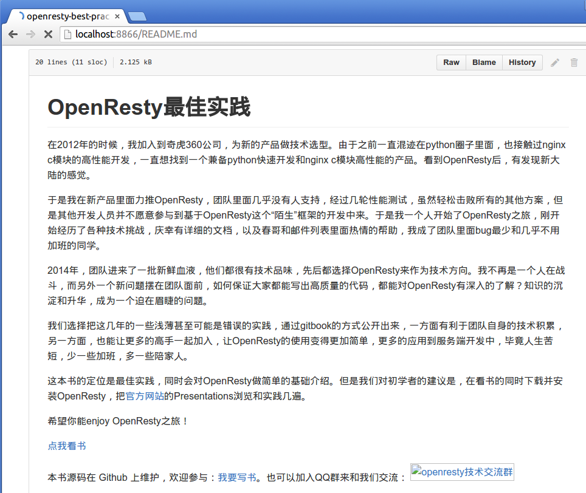
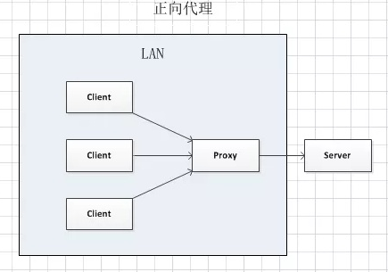
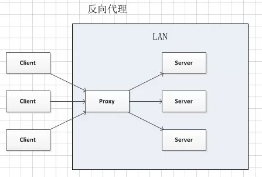

反向代理
什么是反向代理
反向代理（Reverse Proxy）方式是指用代理服务器来接受 internet 上的连接请求，然后将请求转发给内部网络上的服务器，并将从服务器上得到的结果返回给 internet 上请求连接的客户端，此时代理服务器对外就表现为一个反向代理服务器。
举个例子，一个用户访问 http://www.example.com/readme，但是 www.example.com 上并不存在 readme 页面，它是偷偷从另外一台服务器上取回来，然后作为自己的内容返回给用户。但是用户并不知情这个过程。对用户来说，就像是直接从 www.example.com 获取 readme 页面一样。这里所提到的 www.example.com 这个域名对应的服务器就设置了反向代理功能。
工作原理
反向代理服务器，对于客户端而言它就像是原始服务器，并且客户端不需要进行任何特别的设置。
- 客户端向反向代理的命名空间 (name-space) 中的内容发送普通请求；
- 接着反向代理将判断向何处 (原始服务器) 转交请求，并将获得的内容返回给客户端，就像这些内容原本就是它自己的一样。
如下图所示：

反向代理典型应用场景
- 反向代理的典型用途是将防火墙后面的服务器提供给 Internet 用户访问，加强安全防护。
- 反向代理还可以为后端的多台服务器提供负载均衡，或为后端较慢的服务器提供 缓冲 服务。
- 另外，反向代理还可以启用高级 URL 策略和管理技术，从而使处于不同 web 服务器系统的 web 页面同时存在于同一个 URL 空间下。
Nginx 的其中一个用途是做 HTTP 反向代理，下面简单介绍 Nginx 作为反向代理服务器的方法。
场景描述：访问本地服务器上的 README.md 文件 http://localhost/README.md，本地服务器进行反向代理，从 https://github.com/moonbingbing/openresty-best-practices/blob/master/README.md 获取页面内容。
nginx.conf 配置示例：
worker_processes 1;
pid logs/nginx.pid;
error_log logs/error.log warn;
events {
worker_connections 3000;
}
http {
include mime.types;
server_tokens off;
## 下面配置反向代理的参数
server {
listen 8866;
## 1. 用户访问 http://ip:port，则反向代理到 https://github.com
location / {
proxy_pass https://github.com;
proxy_redirect off;
proxy_set_header Host $host;
proxy_set_header X-Real-IP $remote_addr;
proxy_set_header X-Forwarded-For $proxy_add_x_forwarded_for;
}
## 2.用户访问 http://ip:port/README.md，则反向代理到
## https://github.com/.../README.md
location /README.md {
proxy_set_header X-Real-IP $remote_addr;
proxy_set_header X-Forwarded-For $proxy_add_x_forwarded_for;
proxy_pass https://github.com/moonbingbing/openresty-best-practices/blob/master/README.md;
}
}
}
成功启动 Nginx 后，我们打开浏览器，验证下反向代理的效果。在浏览器地址栏中输入 localhost/README.md，返回的结果是我们 GitHub 源代码的 README 页面。如下图：

我们只需要配置一下 nginx.conf 文件，不用写任何 web 页面，就可以偷偷地从别的服务器上读取一个页面返回给用户。
下面我们来看一下 nginx.conf 里用到的配置项：
(1)
locationlocation项对请求 URI 进行匹配，location后面配置了匹配规则。 例如上面的例子中，如果请求的 URI 是localhost/，则会匹配location /这一项；如果请求的 URI 是localhost/README.md，则会匹配location /README.md这项。上面这个例子只是针对一个确定的 URI 做了反向代理，有的读者会有疑惑：如果对每个页面都进行这样的配置，那将会大量重复，能否做 批量 配置呢？此时需要配合使用 location 的正则匹配功能。具体实现方法可参考 Nginx 文档中 关于 location 的描述。
(2)
proxy_passproxy_pass后面跟着一个 URL，用来将请求反向代理到 URL 参数指定的服务器上。 例如我们上面例子中的proxy_pass https://github.com，则将匹配的请求反向代理到https://github.com。(3)
proxy_set_header默认情况下，反向代理不会转发原始请求中的 Host 头部，如果需要转发，就需要加上这句：
proxy_set_header Host $host;除了上面提到的常用配置项，还有
proxy_redirect、proxy_set_body、proxy_limit_rate等参数，具体用法可以到 Nginx 官网 查看。
正向代理
既然有反向代理，自然也有 正向代理（Forward Proxy）。简单来说，正向代理就像一个跳板，例如一个用户访问不了某网站（例如 www.google.com），但是他能访问一个代理服务器，这个代理服务器能访问 www.google.com，于是用户可以先连上代理服务器，告诉它需要访问的内容，代理服务器去取回来返回给用户。例如一些常见的翻墙工具、游戏代理就是利用正向代理的原理工作的，我们需要在这些正向代理工具上配置服务器的 IP 地址等信息。
如下图所示 (图片来自网络)：
 vs 
图解：
在 正向代理 中，Proxy 和 Client 同属于一个 LAN（图中方框内），隐藏了客户端信息。 在 反向代理 中，Proxy 和 Server 同属于一个 LAN（图中方框内），隐藏了服务端信息。
实际上，Proxy 在两种代理中做的事情都是替服务器代为收发请求和响应，不过从结构上看正好左右互换了一下，所以把后出现的那种代理方式称为反向代理了。
正向代理和反向代理区别总结： | 对比条目 | 正向代理 | 反向代理 | |----|----|----| | 例子 | 访问外网 | 电商多台服务器分布部署 | | 用途 | 访问无法直接访问的资源 | 分摊系统的压力，提高系统的性能 | | 客户端是否需要进行相应配置 | 是 | 否 | | 是否明确要访问的服务器地址 | 是 | 否 | | 区别 | 隐藏了 客户端 信息 | 隐藏了 服务端 信息 |